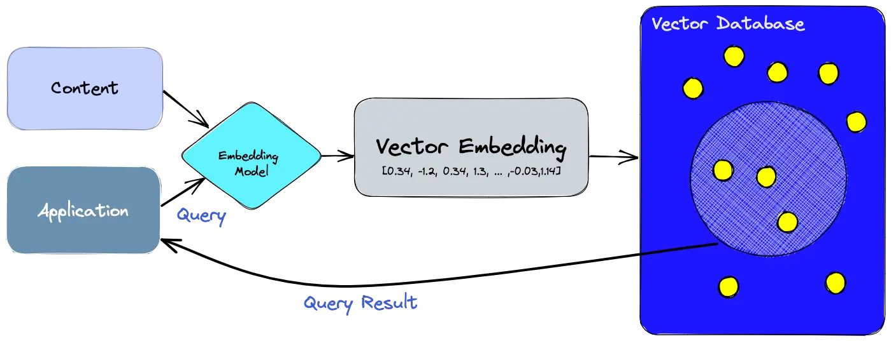
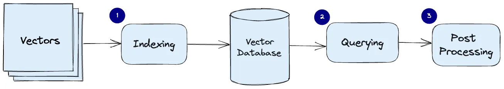

A vector database indexes and stores vector embeddings for fast retrieval and similarity search, with capabilities like CRUD operations. Vector embeddings are generated by large language models.

- Use the embedding model to create vector embeddings for the content we want to index.
- The vector embedding is inserted into the vector database, with some reference to the original content the embedding was created from.
- When the application issues a query, use the same embedding model to create embeddings for the query and use those embeddings to query the database for similar vector embeddings.
- Tracking back the original content associated with most similar vector embeddings.

- Indexing: The vector database create indexes for vector embedding using an algorithm such as Random Projection, Product Quantization, Locality-sensitive hashing, or Hierarchical Navigable Small World (more on these below). This step maps the vector embedding to a data structure that will enable faster searching.
- Querying: The vector database compute the index of query vector to find the approximated nearest neighbors vector embedding applying a similarity metric.
- Post Processing: The vector database retrieves the final nearest neighbors from the dataset and compute the similarity and re-ranking the nearest neighbors vector embedding.
In vector databases, a similarity metric is applied to rank a vector that is the most similar to query vector, there is different similarity measure. The basic rule of thumb in selecting the best similarity metric is to match it to the one used to train the embedding model, which is usually the dot product.
Reference
- https://www.pinecone.io/learn/vector-database/
- https://www.pinecone.io/learn/vector-similarity/
- https://www.pinecone.io/learn/series/faiss/